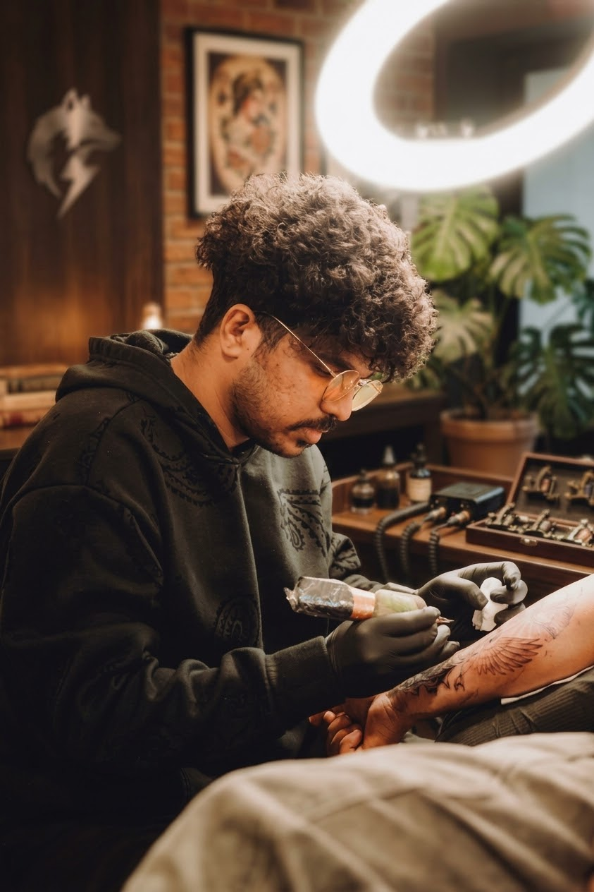

Signature StyleSculptural & Architectural Pepper Shading
True whip-shaded pepper shading—not static dot-by-dot work. Engineered for classical Greek & Roman statues, temple architecture, and mythological reliefs with stone-carved texture that ages gracefully.
3RL / 5RL · Ava GT & Bishop
Explore Style →